山寺/山形県山形市
閑さや岩にしみ入る蝉の声
芭蕉
・・・で有名な山寺である。本名は立石寺。山形県を代表する名刹であり観光地でもある。
と同時に死者の魂が集まる山として知られている。
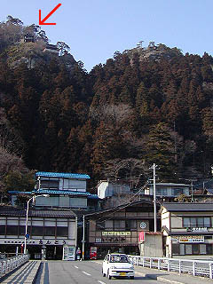
山寺の駅前からの風景。山の上に堂宇が見える。
ここがムカサリ絵馬との出合いの場となる。まさかこんなに入れ込む事になろうとは・・・
案内を見ると駅から往復で2時間との事。ちなみに只今、午後4時半。果たして日没までに帰って来れるのだろうか？
帰りの時間が心配なので兎に角最初の部分は端折ってずんずん進んで行く。
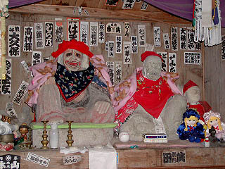 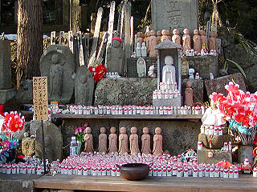
根本中堂や日枝神社が並ぶ登山口付近には大量の水子地蔵や恐ろしい形相の奪衣婆(?)などがいて死の世界への入口である事を物語っている。
入山料を払い、いよいよ「お山」に入って行く。
山中には所々に奇岩が聳え立ち霊場というコトバがぴったりな雰囲気をかもし出している。
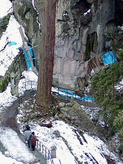
小春日和といっていい位のこの日の気温だったがまだまだ雪が残っている。
誰がするのか知らないが参道自体は奇麗に雪掻きされていて大変有り難い。この場を借りてお礼を申し上げたい気分である。
ただ、陽が傾いて来たので日影は凍結していて結構危なかったが。
崖と杉の巨木に囲まれたような山道を登って行く。物凄い圧迫感がある。山や木に潰されそうだ。
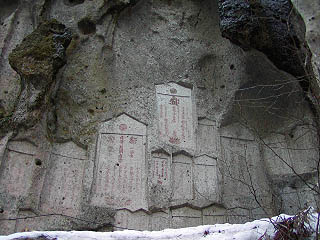 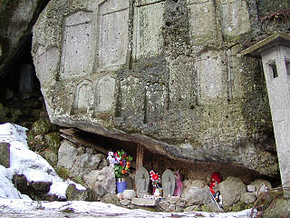
圧迫感があるのは地形や植生のためだけでない。岩盤のあちこちに石塔の形を陰刻したものがあり、これが大量に迫ってくるのだ。
これは岩塔婆といって故人の供養のために彫られたもので、戒名が刻まれている。室町時代のものもあるそうだ。
見上げれば相当足場の悪い岩盤にも彫られている。石工の苦労と信仰の篤さが偲ばれる。
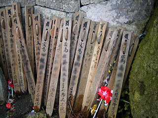
あちらこちらに見られる木製の後生車。通常後生車と言えば人の背の高さ位あって角柱状のものが多いが、ここのは長さ4〜50センチ位で本体の厚みも薄い。どちらかというと卒塔婆に近い形だ。実際卒塔婆を奉納するような感覚で奉納してあるのではなかろうか。
この後、最上三十三観音と呼ばれる札所の寺をいくつか訪れるが、この地方ではさして珍しいものではないようだ。あちこちで見かけたから。
この後生車も幼くして亡くなった子供のためのモノと聞く。勿論供養のためにガンガン回させてもらいました。
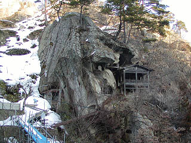 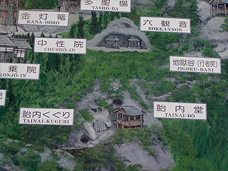
途中にあった岩に密着した胎内堂。隣には胎内くぐりと称された洞窟があるが現在は入洞禁止となっている。
積雪のため近付く事も出来なかったが岩の反対側へと通り抜けられる洞窟になっていたようだ。
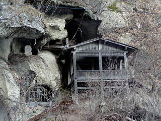 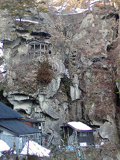
胎内堂は御覧のような切り立った奇岩の途中にある。
下には塔頭がいくつかあり、その脇を通りさらに上を目指す。
さて、そんなこんなで奥の院に到着する。以外と時間がかからなかったのでホッとする。これで無事下山出来るメドが立った。
奥の院周辺には如法堂と呼ばれる奥の院、大仏殿、輪蔵そして雪の間を割っておびただしい石塔と岩塔婆、後生車がひしめき合っている。
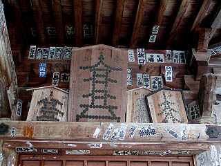
奥の院に掛けてあった六文銭を打ち付けた五輪塔の絵馬。
そして中にはこんな絵馬が・・・
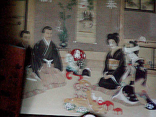
・・・それがムカサリ絵馬だった。
堂内は薄暗く外から見るだけなので詳細は判らなかったが（ブレちゃってごめんね）比較的古いものと思われる。
新郎新婦と仲人、目出たそうな飾り物に彩られた室内。
この世で行われる事のなかった祝いの場。そこには婚礼であるにも関わらず俯いた男女が封じ込められた無言の婚礼風景である。
奥の院の隣には大仏殿と称された建物があり、中央には5メートルもの阿弥陀仏が鎮座していた。
大仏の背後にもう一部屋ありそこには婚礼人形がずらりと並んでいた。
「光明遍照十方〜」と掛れた垂幕の右側に婚礼人形が積んであるのがチョロッと見えるかと思う。
そして大仏さんの手前の左右の壁にはズラリとムカサリ絵馬が並んでいた。
撮影禁止だったので写真はないが、その数は圧倒的だった。
こんなにあるとは思わなかった。しかも昔の風習かと思っていたら、平成に入ってからのものもたくさんある。
あまりにも衝撃的な出合いにそれまで本でしか知らなかったムカサリ絵馬の概念は完全に崩れ去った。
これは今でも生きている信仰形態なのだ、と。
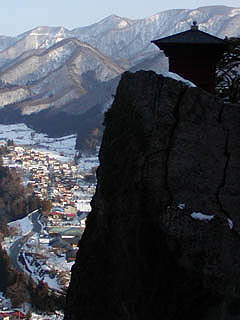
物見遊山気分で訪れた山寺だったが、ムカサリ絵馬の衝撃にまた翌週山形に行く事になっちゃいました・・・
１ 山寺/山形県山形市
2 唐松観音、六椹観音/山形県山形市
3 若松観音/山形県天童市
4 黒鳥観音/山形県東根市
ムカサリ絵馬へ戻る
珍寺大道場 HOME